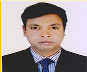
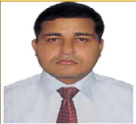
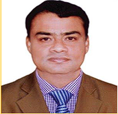
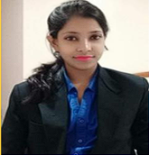

_Shahreen-.jpeg)
Raihanul Fardaus Shahreen
Chief Executive Officer (CEO)
Monitoring & Evaluation Expert, visionary leader and evidence-driven strategist.
Core Management & Research Leadership Team—bold research, empowered leadership.
Monitoring & Evaluation Expert, visionary leader and evidence-driven strategist.
 Directorate of Primary Education and ex-RRRC).jpeg)
Governance & Institutional Reform Specialist; Director General, Directorate of Primary Education and former RRRC, Government of the People’s Republic of Bangladesh.

Associate Professor & Head, Department of Social Administration and Justice, Faculty of Arts and Social Sciences, University of Malaya, Malaysia.

Associate Professor & Head of Department, BRRU and PhD Researcher at University of New Orleans, Louisiana, USA.


.jpeg)
MBBS, MPH public health


In addition to the core leadership, Global MindLens works closely with an extended pool of experts.





Beyond this core and extended team, Global MindLens engages a pool of 57 field operation and data collection team members, enabling robust primary data collection and field-based research across challenging contexts.